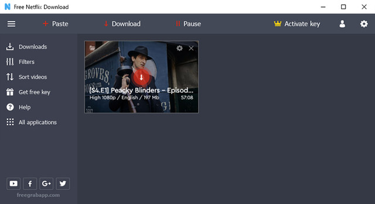
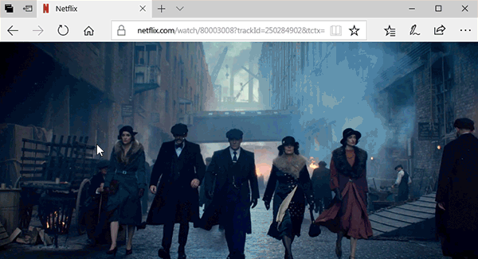

Visit >>> https://ftuapps.com/
Genuine cracked applications direct from the scene group.
A Team-FTU project!

FreeGrabApp Team proudly presents FlixGrab application! FlixGrab, unique and powerful application for downloading entire NetFlix serials, TV shows, documentaries, movies, music using the fastest multistream FreeGrabApp application engine. With our magnificent application, you can download and watch any NetFlix video offline on any device without spending internet traffic, and without disrupting NetFlix limitations! FreeGrabApp company highly respects the copyright terms, but at the same time, we consider unacceptable any limitations by copying already purchased or free video content for personal use, which is established by Netflix and other video services. Therefore, using our programs is totally legal only for personal needs and without rights of sharing the material to third parties.
How It Works:
- Copy a video link from your browser to the clipboard
- Paste a link to the application by clicking «Paste» button.
- Click «Download» button.
- Enjoy music and video.

Note: Never Do Multi-Downloads, Download One at a time.
Features:
• Interface
• Free Netflix Download got totally new and user-friendly interface! We hope you’ll enjoy it!
• Load Control
• You can easily stop, resume the downloading process and much more!
• Optimal settings
• Automatic selection of the optimal voice quality and language!
• Great Sound
• Support downloading Dolby Digital Surround Audio 5.1!
• HD Quality
• Free Netflix Download support downloading HD NetFlix video.
• Multi-Stream
• Free Netflix Download is able to download multiple videos at the same time!
• Subtitles
• Support downloading subtitles in TTML format!
What's New:
- Official Site Does Not Provide Any Info About Changes In This Version.
Homepage: https://freegrabapp.com/product/free-netflix-download/
Installation/Activation Instruction is Included in the folder!
AntiVirus Scanned Result for User-End >>>
Activator: https://www.virustotal.com/gui/file/3ed33b8fe97a885a8cd7bd6b24844ddd4891e40195e0ae04d0b7efac0e04aa51/detection
Want to know more about false positive virus alarm >>> https://onehack.us/Thesis On Zero Day Cracked Software, Games & Online Scanner Virus Detection